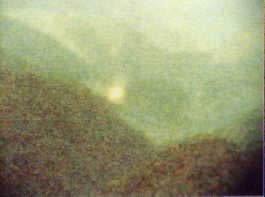

Lancement de GRO-Compton pour étudier les rayons gamma de
l'Univers .
Ariane met en orbite le satellite d'observation européen ERS
1.
A La Foa (Nouvelle-Calédonie), 2 témoins observent
pendant un temps très court 2 disques, lumineux de couleurs argentées ou vert fluorescent suivant les témoins, se
déplaçant à grande vitesse et sans bruit. Un 3ᵉ témoin n'a vu que 1 seul objet se déplaçant également très
rapidement et sans bruit. Les informations recueillies auprès des services de météorologie et de circulation
aérienne n'ont pas permis d'associer le phénomène à un ballon ou un aéronef SEPRA: PAN classé D.
Observation du 20 avril aux environs de Sao Paulo. Foudre en boule ?

Dans la forêt tropicale des environs de Sao Paulo (Brésil),
photographie d'un phénomène lumineux (ci-contre).
A avion à réaction Alitalia MD-80 transportant 57 passagers de Milan à
l'aéroport de Londres-Heathrow traverse la côte du Kent près de Lydd. Soudain le capitaine Achille Zaghetti repère
un phénomène en forme de cigare devant et
au-dessus de lui. Il les dépasse en vitesse sur une trajectoire dangereusement proche. Pour Zaghetti, le phénomène
ne ressemble à rien de ce qu'il connait, mais sa forme en losange et sa grande vitesse font qu'il craint que ce soit
un missile. L'aéroport de Heathrow, qui suivait l'avion à 22000 pieds sur sa descente régulière, a repèré l'objet
non identifié sur l'écran juste au moment où Zaghetti l'a signalé. L'ovni se trouve à 10 miles environ derrière le
jet et disparait rapidement. Ils n'ont aucune idée de ce que c'était. Alors que Zaghetti a soumis un rapport
officiel, Le Ministère de la Défense et la CAA s'efforçent de s'informer discrètement. Zaghetti décide alors de
parler de ce qui s'est passé en Italie et les autorités britanniques sont forcées de parler publiquement de leur
enquête. La CAA confirmera que nombre de demandes ne sont pas parvenues à indiquer ce que l'observation a pu
être. Ils excluront la possibilité qu'il puisse s'agit d'un missile clandestin tiré depuis un endroit de la
côte du Kent, qui n'aurait pu atteindre l'altitude de cet objet. Le MoD
indiquera que, ce qui s'est passé fut un mystère. Ce fut encore un autre ovni.